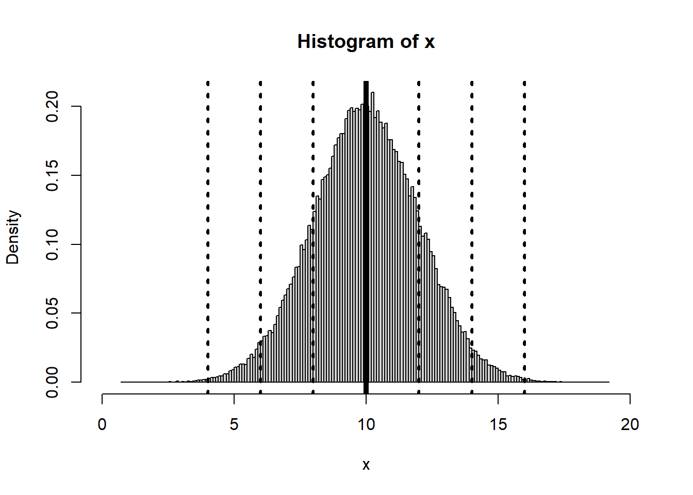

Exploratory data analysis
It is important prior to starting any analysis to inspect data This can be done to check for any departures from normality or any existing trend. Principle plots like histogram, boxplots and measures of central tendency and dispersion can help detect distributions of data that deviates from the normal. In additions maps can aid illustrate any spatial trends.
Load data
We will mostly use the meuse dataset available in sp package. The meuse data set provided by package sp is a data set comprising of four heavy metals measured in the top soil in a flood plain along the river Meuse, along with a handful of covariates. The process governing heavy metal distribution seems that polluted sediment is carried by the river, and mostly deposited close to the river bank, and areas with low elevation. This document shows a Geostatistical analysis of this data set. The data set was introduced by Burrough and McDonnell, 1998.
rm(list=ls(all=TRUE)) # Clear memory
#Load existing/install missing libraries
if (!require("pacman")) install.packages("pacman")
pacman::p_load(gstat,sp)
data(meuse)
df <- meuse
head(df, n=3)## x y cadmium copper lead zinc elev dist om ffreq soil
## 1 181072 333611 11.7 85 299 1022 7.909 0.00135803 13.6 1 1
## 2 181025 333558 8.6 81 277 1141 6.983 0.01222430 14.0 1 1
## 3 181165 333537 6.5 68 199 640 7.800 0.10302900 13.0 1 1
## lime landuse dist.m
## 1 1 Ah 50
## 2 1 Ah 30
## 3 1 Ah 150Measures of Cental Tendency
Measures of of center of tendency include: mean. median and mode. For example, using the topsoil copper concentration data in Meuses dataset these measures can be computed as follows in R.
Mean and Median
See below.
vMean <- mean(df$copper)
cat("The mean is ", vMean)## The mean is 40.31613vMedian <- median(df$copper)
cat("The median is ", vMedian)## The median is 31Mode
There are several ways of finding the mode. We will illustrate here using a designed function and an inbuilt function in modeest library.
pacman::p_load(modeest)
attach(df)
getmode <- function(x) {
ux <- unique(x)
ux[which.max(tabulate(match(x, ux)))]
}
vMode <- getmode(copper)
cat("The mode using the designed function is ", vMode)## The mode using the designed function is 22vMode <- mlv(copper, method = "mfv")
str(vMode) #Chec structure## num 22typeof(vMode) #Check variable type## [1] "double"cat("The mode using modeest package is ", vMode)## The mode using modeest package is 22Measures of Dispersion
Measures of dispersion include: variance, standard deviation, kurtosis, coefficient of variation and kurtosis. To illustrate this we still use meuse data in sp package.
Variance and standard deviation
data(meuse)
attach(meuse)
#compute variance of copper
var(copper)## [1] 560.763#Standard deviation of copper
sd(copper)## [1] 23.68044#Or You can compare the two approaches as below:
sd(copper)==sqrt(var(copper))## [1] TRUEKurtosis and skewness
Intuitively, the kurtosis describes the tail shape of the data distribution. The normal distribution has zero kurtosis and thus the standard tail shape. For instance the copper data is more peaked than the normal distribution since the kurtosis > 0. This is also illustrated by a histogram plot overlaid with the normal distribution curve.
On the other hand, skewness is a measure of symmetry. As a rule, negative skewness indicates that the mean of the data values is less than the median, and the data distribution is left-skewed. Positive skewness would indicate that the mean of the data values is larger than the median, and the data distribution is right-skewed.
pacman::p_load(e1071)
kurtosis(copper)## [1] 1.22259hist(copper, prob=TRUE,breaks=20,main="Normal distribution curve over histogram", xlab= "Copper")
curve(dnorm(x, mean=mean(copper), sd=sd(copper)), add=TRUE)
abline(v=mean(copper), col="red")
text(mean(copper),0.04,"Mean", col = "red", adj = c(0, -.1))
abline(v=median(copper), col="blue")
text(median(copper),0.04,"Median", col = "blue", adj = c(1, -.1))cat("Skewness of copper is ", skewness(copper), " . This means that the data is positively skewed as illustrated on the histogram plot.")## Skewness of copper is 1.386803 . This means that the data is positively skewed as illustrated on the histogram plot.Normal Distribution
Here we illustrate how normal distribution looks like. In R you can generate a the normal distribution using a specified mean and standard deviation.
x<-rnorm(100000,mean=10, sd=2)
hist(x,breaks=150,xlim=c(0,20),freq=FALSE)
abline(v=10, lwd=5)
abline(v=c(4,6,8,12,14,16), lwd=3,lty=3)
Exploring spatial trend
Spatial exploratory data analysis starts with the plotting of maps with a measured variable.
coordinates(meuse) <- c("x", "y")
spplot(meuse, "zinc", do.log = T)
bubble(meuse, "zinc", do.log = T, key.space = "bottom")
The evident structure here is that zinc concentration is larger close to the river Meuse banks.
In case of an evident spatial trend, such as the relation between top soil zinc concentration and distance (\(\text{zinc} \propto \beta_0 + \beta_1(\text{dist})\)) to the river, we make a plot to illustrate this relationship.
pacman::p_load(lattice)
xyplot(log(zinc) ~ sqrt(dist), as.data.frame(meuse))
The plot shows that Zinc concentration linearly decreases with increasing distance from the river. This supports the former premise that heavy metal concentration is higher along the river banks.
We can also model this relationship using a linear regression and plot maps with fitted values and with residuals.
zn.lm <- lm(log(zinc) ~ sqrt(dist), meuse)
meuse$fitted.s <- predict(zn.lm, meuse) - mean(predict(zn.lm, meuse))
meuse$residuals <- residuals(zn.lm)
spplot(meuse, c("fitted.s", "residuals"))
These plots reveal that although the trend removes a large part of the variability, the residuals do not appear to behave as spatially unstructured (spatially independent) or white noise. We see that residuals with a similar value occur regularly close to another. This indicates some degree of spatial dependency with distance. More analysis will take place when we further analyse these data in the context of geostatistical models; first we will go through simple, non-geostatistical interpolation approaches.
Let us first look at another example before we go to non-geostatistical interpolation. Here we use data from [Piikki et al.] 2019(https://www.mdpi.com/2071-1050/11/15/4038).
d <- read.csv("./data/soil_data_CIAT.csv", stringsAsFactors=FALSE)
head(d, n=3)## LAB_ID X Y Bulk_density Carbon Clay Sand
## 1 CT258-6711 714875 72875 1.454268 2.472 43.54774 40.47143
## 2 CT258-6697 713625 73125 1.171975 2.298 51.57937 32.42703
## 3 CT258-6797 706625 73375 1.398217 1.510 35.93126 54.07674Examine the spatial trend of the variables (Bulk density, Carbon, Sand and Clay).
pacman::p_load(gridExtra)
coordinates(d) <- c("X", "Y")
plots = lapply(names(d)[2:5], function(.x) spplot(d,.x,do.log = T, main=.x))
do.call(grid.arrange, plots)
Its clear that there is some spatial structure in these variables. This is also supported by the trend depicted their residuals obtained by regressing the variables over their locations/coordinates:
#Carbon
ca_lm <- lm(Carbon ~ X + Y, d)
d$fitted.ca <- predict(ca_lm, d) - mean(predict(ca_lm, d))
d$residuals.ca <- residuals(ca_lm)
#Bulk density
bd_lm <- lm(Bulk_density ~ X + Y, d)
d$fitted.bd <- predict(bd_lm, d) - mean(predict(bd_lm, d))
d$residuals.bd <- residuals(bd_lm)
#sand
sa_lm <- lm(Sand ~ X + Y, d)
d$fitted.sa <- predict(sa_lm, d) - mean(predict(sa_lm, d))
d$residuals.sa <- residuals(sa_lm)
spplot(d, names(d)[6:11])
#plots = lapply(names(d)[6:11], function(.x) spplot(d,.x, main=.x))
#do.call(grid.arrange, plots)Is there any relationship between organic carbon with clay and sand?
par(mfrow=c(1,2))
plot(Carbon ~ Clay + Sand , d)
We have seen how to explore data using plots and some measures. Next lesson illustrates how to analyze the data using non-geostatistical interpolation.
References
Piikki, K.; Söderström, M.; Sommer, R.; Da Silva, M.; Munialo, S.; Abera, W. A Boundary Plane Approach to Map Hotspots for Achievable Soil Carbon Sequestration and Soil Fertility Improvement. Sustainability 2019, 11, 4038.